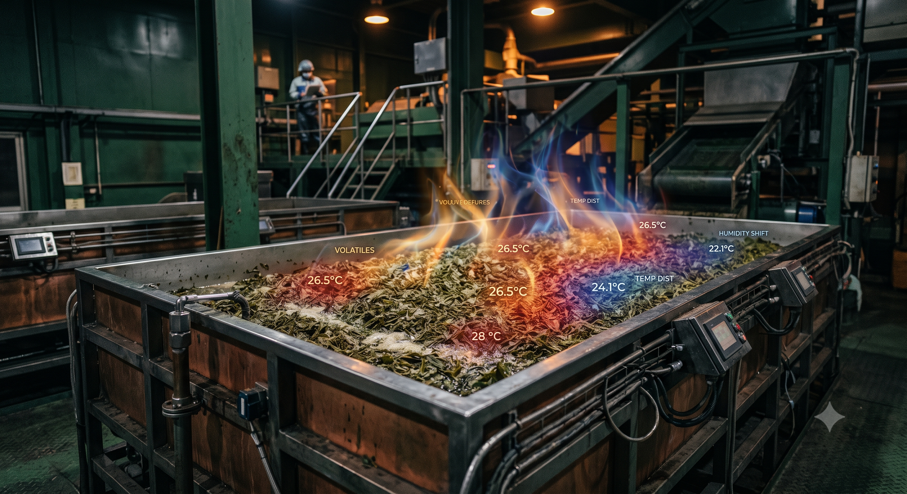
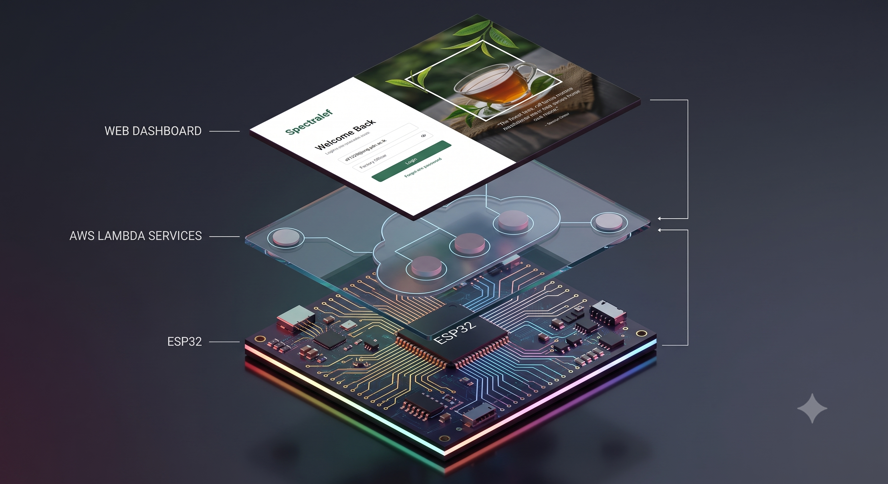
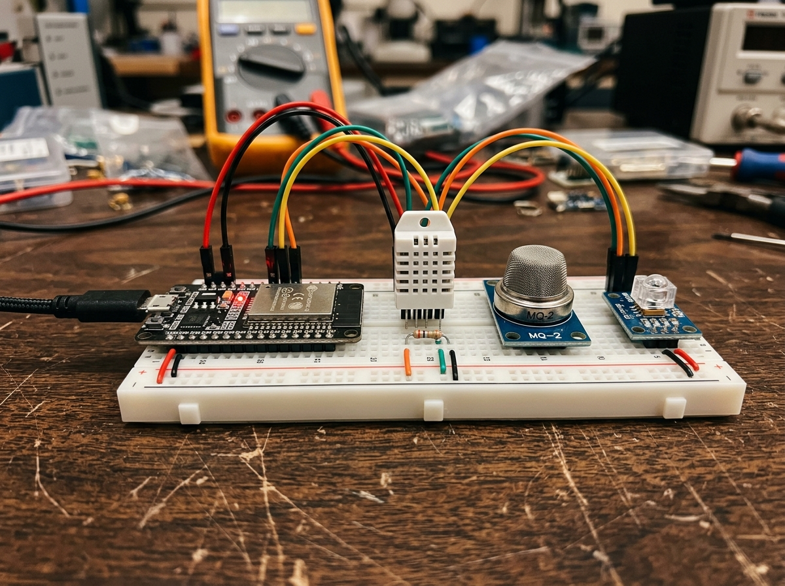
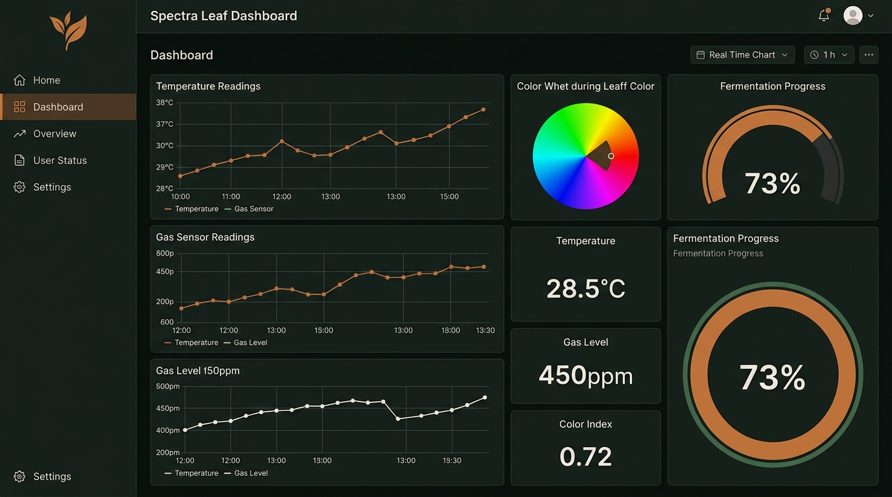

Digitizing the tea fermentation sweet spot — replacing decades of subjective intuition with real-time sensor intelligence and serverless cloud analytics.
For generations, the tea industry has relied heavily on manual observation and the subjective intuition of experienced factory operators to determine the fermentation "sweet spot." This dependency creates an operational bottleneck vulnerable to environmental fluctuations and human error.
The chemical transition from green leaf catechins to coppery-brown theaflavins and thearubigins releases volatile organic compounds (VOCs) and generates exothermic heat. Because these critical variables are invisible to the naked eye, relying on human senses leads to direct operational inefficiencies:
Spectra Leaf directly eliminates the subjectivity of artisanal observation. By treating the fermentation trough as an active chemical bioreactor, our AWS-powered IIoT platform digitizes environmental vectors in real time, translating human guesswork into hard data science.
Replace subjective smell-and-touch evaluation with quantitative sensor telemetry covering gas composition, thermal profiles, and spectral color data.
Deliver live dashboards so operators can track fermentation progress and receive alerts when conditions deviate from optimal parameters.
Harvest time-series telemetry paired with expert-labeled quality outcomes to create the first open dataset for tea fermentation research.
Lay the data foundation for machine learning models that can autonomously detect the fermentation "sweet spot" without human intervention.

A fully serverless, event-driven architecture connects edge sensors to cloud analytics and a responsive operator dashboard. Every component is completely decoupled to guarantee independent scaling, hardware fault isolation, and minimal operational overhead.
The entire design prioritizes high throughput at the edge and zero idle maintenance costs in the cloud. Hardware nodes publish physical telemetry changes directly over encrypted protocols, completely bypassable from direct UI rendering dependencies:

| Layer | Component | Technology | Responsibility |
|---|---|---|---|
| Edge | Microcontroller | ESP32-WROOM-32 | Sensor polling, MQTT publish, Device Shadow subscription |
| Edge | Sensors | DHT22 / MQ-series / TCS34725 | Temperature, volatile gas, and RGB color acquisition |
| Cloud | Message Broker | AWS IoT Core | MQTT ingestion, Device Shadow state sync |
| Cloud | Compute | AWS Lambda | Stateless processing, REST endpoint handlers |
| Cloud | API | API Gateway | RESTful interface between dashboard and backend |
| Cloud | Storage | DynamoDB | Time-series telemetry ingestion and query |
| Cloud | Auth | Amazon Cognito | SRP-based authentication, token refresh (60s grace) |
| Client | Dashboard | Next.js + Tailwind | Real-time visualization, session management via Amplify v6 |
Amazon Cognito enforces Secure Remote Password (SRP) protocol — the user's password never leaves the client device. Access tokens auto-refresh with a 60-second grace period ensuring seamless session continuity without re-authentication.
Every layer of Spectra Leaf is designed for reliability in a humid, high-temperature factory environment — from ruggedized sensor wiring to auto-reconnecting MQTT clients.
Dual-core 240 MHz processor with built-in Wi-Fi and BLE. Manages concurrent sensor polling, MQTT publishing, and Device Shadow state subscriptions over TLS-encrypted connections.
Temperature (DHT22), volatile organic compound (MQ-series gas sensors), and spectral color (TCS34725 RGB) — capturing the three primary dimensions of oxidation progression.
The ESP32 subscribes to AWS IoT Device Shadow updates, enabling remote state control (RUNNING / STOPPED) without direct connectivity to the operator's browser.


AWS IoT Core ingests MQTT telemetry and maintains a Device Shadow — a virtual twin of each sensor node's reported and desired state, enabling bidirectional control.
Stateless Lambda functions behind API Gateway expose REST endpoints for historical data queries, session management, and device control — scaling to zero when idle.
A responsive SPA built with Next.js and Tailwind CSS, authenticated via AWS Amplify v6 and Cognito. Operators view live sensor feeds, historical trends, and fermentation batch status in real time.
No public tea fermentation dataset exists. Spectra Leaf creates one from scratch — pairing multi-sensor telemetry with expert-labeled quality grades to power future machine learning.
Each fermentation batch is scored by experienced tea makers using Good Leaf Percentage — the fraction of leaves reaching optimal oxidation. This human label becomes the ground-truth target for every sensor reading captured during that batch.
With sufficient labeled batches, a classification model will learn to predict fermentation completion autonomously — detecting the moment gas-profile, color, and temperature collectively signal the "sweet spot" without human intervention.
Automated pipelines and rigorous edge-case testing ensure every change is validated before reaching production — from GitHub push to AWS Amplify deployment.
Every push to main triggers automated builds and deploys via GitHub Actions, building the Next.js frontend and deploying static output to AWS Amplify Hosting.
Development and staging environments mirror production AWS configurations, catching integration issues before deployment. DynamoDB local and IoT Core test endpoints maintain parity.
SRP authentication flows are stress-tested across token expiry boundaries, verifying the 60-second refresh grace period handles concurrent requests without session drops.
ESP32 firmware implements exponential-backoff reconnection with jitter, tested against network interruptions, broker restarts, and Wi-Fi drops to ensure field reliability.
Telemetry integrity is verified from sensor ADC readings through MQTT serialization, Lambda processing, DynamoDB storage, and finally API Gateway response — ensuring no data loss or corruption.
Production frontend is deployed to AWS Amplify Hosting with automatic branch previews, instant cache invalidation, and custom domain support for factory-floor access.
Undergraduate engineers from the Department of Computer Engineering, University of Peradeniya — combining embedded systems, cloud architecture, and frontend development expertise.
Spectra Leaf demonstrates that industrial-grade fermentation monitoring can be built on fully serverless infrastructure — no on-premise servers, no dedicated IT staff, just sensors talking to the cloud. As the dataset grows batch by batch, the path to autonomous sweet-spot detection becomes clearer. The future of Sri Lankan tea quality isn't just digitized — it's intelligent.